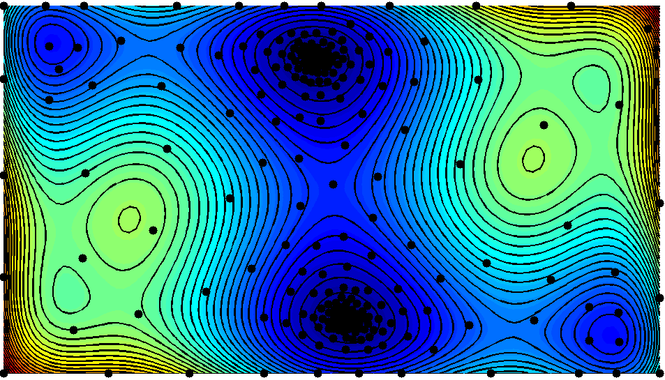

Current ongoing research at Cornell University

Asynchrony and elasticity in surrogate optimization
I work with Professor David Bindel and Professor Christine Shoemaker on surrogate optimization. We are working on optimization of expensive black-box functions in high-dimensions when the number of evaluations are limited. The underlying objective function is approximated by a surrogate surface (interpolating surface) and we use the surrogate surface to decide where to evaluate next.The surrogate surface can for example be a weighted sum of radial basis functions with an appropriately chosen tail function.
Software packages
Professor David Bindel and I have implemented pySOT (https://github.com/dme65/pySOT), which is an asynchronous parallel surrogate optimization toolbox written in Python. pySOT has been downloaded over 18,000 times from PyPi and has been used by many research groups. I have also implemented SOT, which is a C++11 library for surrogate optimization (https://github.com/dme65/SOT)

Global optimization with additional information
I work with Professor David Bindel on global optimization algorithms with provable convergence rates. We're mainly interested in designing efficient optimization algorithms given information about the semi-norm of the objective function in the native space of a given radial basis function.
Structured solvers
I work with Professor Charles Van Loan and Professor Alex Townsend on structured matrix problems. We're interested in problems with Kronecker product structure, such as Khatri-Rao systems of equations, where it's possible to design fast solvers that make use of the given structure.
Scalable structure exploiting inference methods
I work with Professor David Bindel, Professor Andrew Wilson, and Kun Dong on scalable inference for Machine Learning. The log marginal likelihood under a Gaussian process is given by